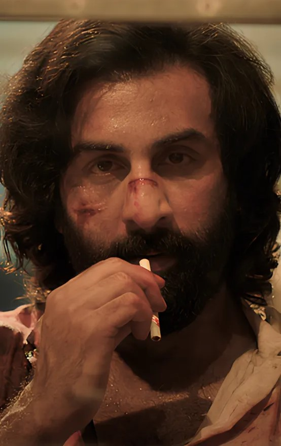
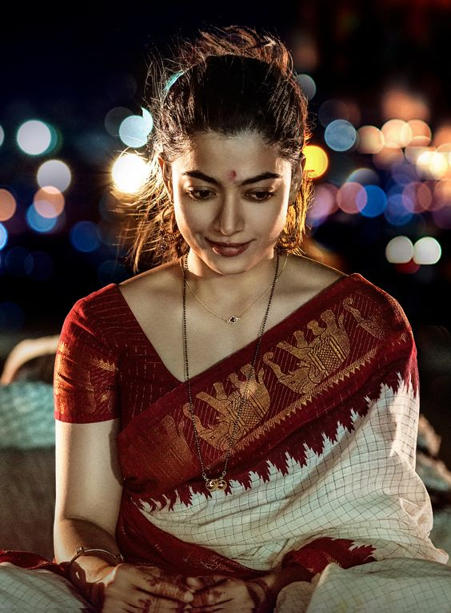
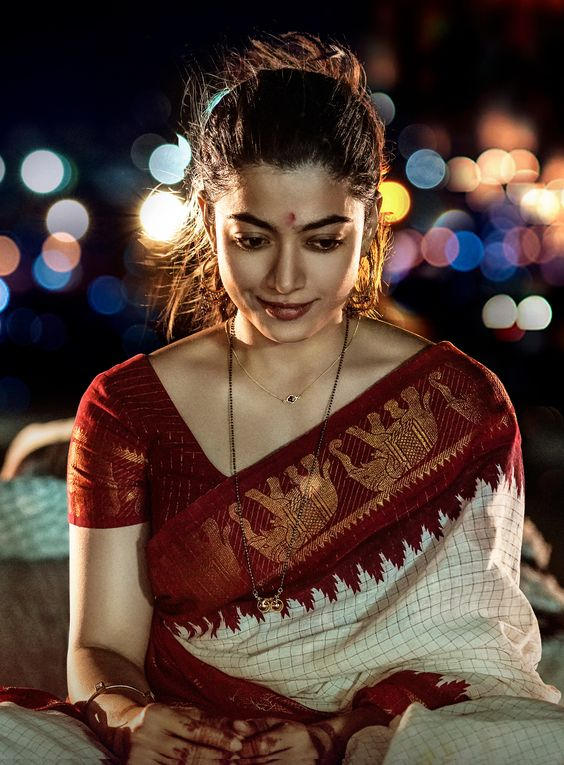
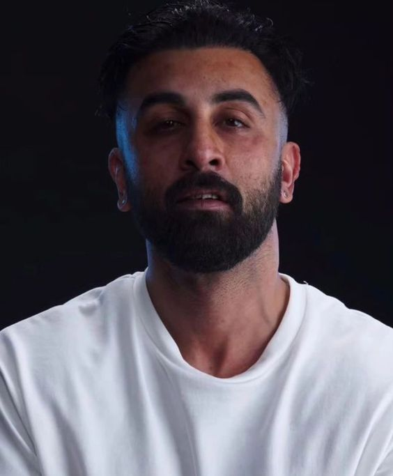
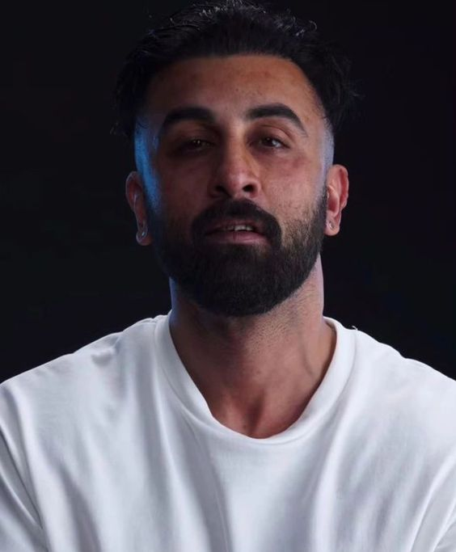

_poster.jpg)
Plot:

Ranvijay "Vijay" Singh is the son of Balbir Singh, a Delhi business tycoon. His love for his father is deep and abiding though the latter's schedule keeps him from spending time with his family. One day, Balbir banishes Vijay to a boarding school in the USA when Vijay threatens the bullies of his sister Reet with an AK-47. Vijay finishes his education and returns home after several years. During Balbir's birthday party, Vijay gets into an argument with Reet's husband Varun, prompting Balbir to expel him from the house yet again. Vijay marries his childhood love Geetanjali and the couple cuts ties with their families and moves to the USA.
Eight years later, Vijay, Geetanjali and their two kids return to India upon learning that Balbir has been shot by assassins. He reconciles with his family and takes it upon himself to uncover the assassin's identity. He rounds up his cousins from the village for backup and recruits a body double for his father who is eventually killed by the assassin named Asrar Haque. Vijay discovers Varun's role in the assassination attempt and kills him publicly at a conference where Asrar is also present. Asrar and his assailants launch a hefty attack on Vijay and his cousins at a hotel. Vijay takes them all down and kills Asrar but he is severely wounded and goes into a coma. He wakes up after two weeks and undergoes a heart transplant for his failing heart.
Vijay recuperates after several months and is approached by Zoya, the fiancée of his heart donor. He starts an affair with Zoya who eventually reveals that she was sent by Asrar's brother Abrar Haque to honey trap him. However, Vijay had already known this and played along to learn the mastermind's identity. He lets Zoya go and learns from his grandfather Rajdheer Singh that Abrar and his brothers are Vijay's second cousins. They are the grandchildren of Shamsher Singh, Rajdheer's younger brother. Rajdheer had renounced Shamsher for his immoral antics. Shamsher's son Azim, who had converted to Islam, was denied any share in Balbir's assets, which prompted Shamsher to commit suicide. Abrar, who had witnessed his grandfather's suicide, became mute from the trauma. Abrar has relocated to Scotland and has been the one plotting against Balbir to seek vengeance for his family.
Vijay and his cousins stop Abrar as he is about to escape the country in a private jet with his third brother Abid. A violent duel ensues on the runway, ending in Vijay killing Abrar. Back home during Diwali, Balbir reveals that he has stage 4 acute lymphoblastic leukemia with only a few months left to live. He realises that his lack of love for his son has always been the root cause of Vijay's aggression.Balbir finally apologises and the two reconcile.

 

 
